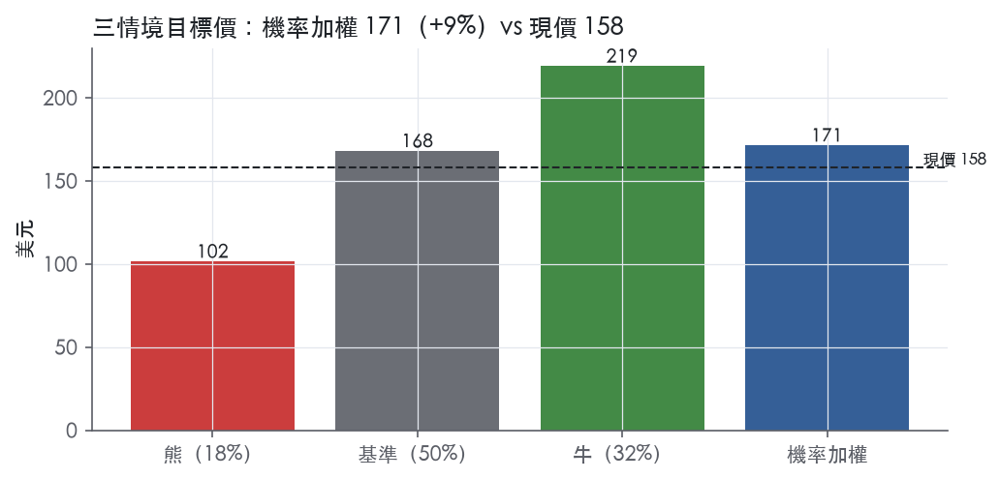
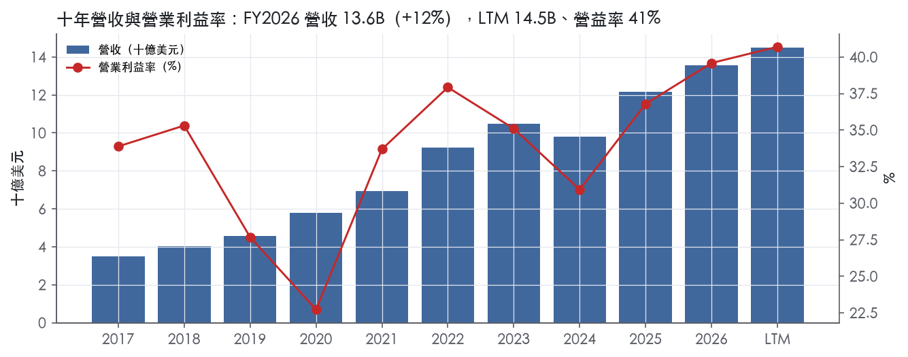
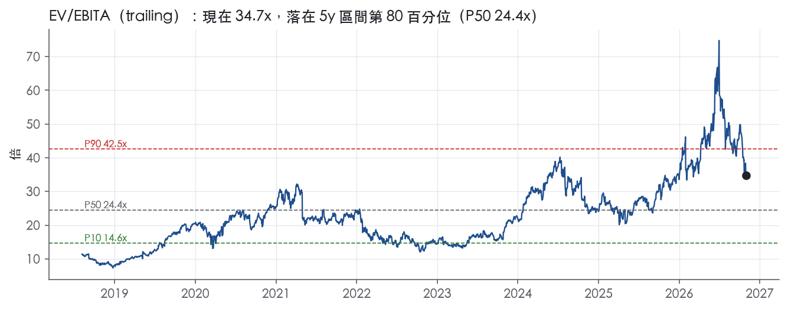
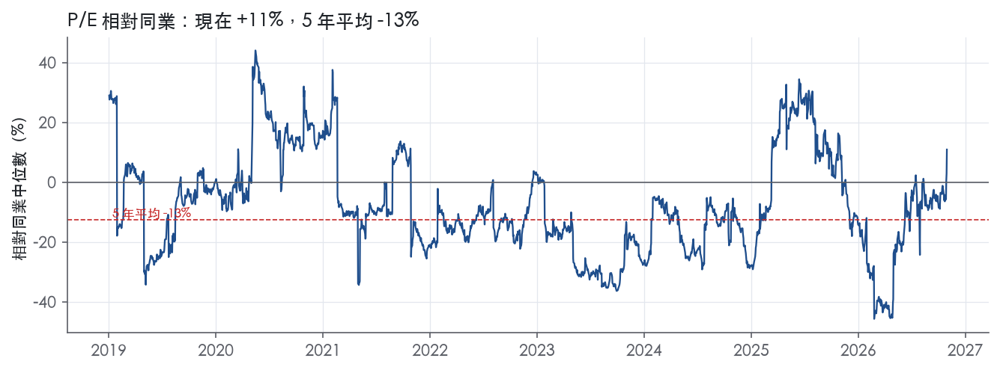
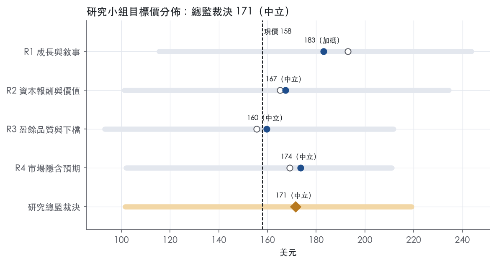
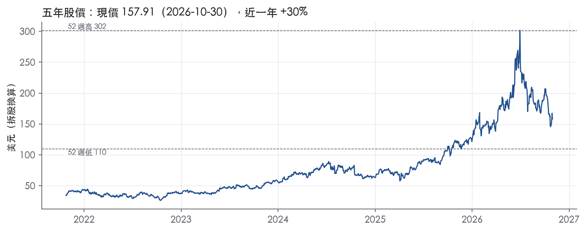

評等總表 › 資訊科技 › KLAC
盈餘上修抵銷倍數回落，中性｜評等 中立｜目標價 171
| 報告日 | 評等 | 目標價 | 當時股價 | 超額報酬 |
|---|---|---|---|---|
| 2026-10-30 | 中立 | 171 | 158 | +2.6% |
| 評等 | 中立（邊界，鄰近加碼） |
| 12 個月目標價 | 171 美元 |
| 現價 | 157.91 美元（2026-10-30） |
| 預期報酬 | 股價 +8.6%＋股息 4.0%＝總報酬 +12.6%；同業籃門檻 10.0%，超額 +2.6% |
| 估值方法 | EV/EBITA 24.0x，套在第 5–8 季的EBITA（也就是一年後的未來四季） |
| 三情境 | 熊 102／基準 168／牛 219 |
| 研究流程 | 四位研究員兩輪辯論＋研究總監裁決 |
| 資料來源 | SEC EDGAR XBRL、Tiingo、FRED（全免費） |
盈餘上修抵銷倍數回落，中性（研究總監裁決，四位研究員兩輪辯論後）
評等 中立（邊界，鄰近加碼）｜12 個月目標價 171 美元（總監三情境機率加權 172 與研究員中位數 170 各半）｜現價 157.91（2026-10-30）
預期報酬：股價 +8.6%＋股息 4.0%＝總報酬 +12.6%。同業籃門檻 10.0%，超額 +2.6%，離加碼的分界不到三個百分點，屬邊界評等（落在其他級距的機率約三成）。
估值方法：EV/EBITA 24.0x，套在第 5–8 季的EBITA（也就是一年後的未來四季）。三情境：熊 102（18%）／基準 168（50%）／牛 219（32%）。
什麼會讓研究總監改變看法：FY2027Q2 法說的 Q3 財測中值高於 4.9B 且遞延系統收入回升，我把 y2 上調到 12%、倍數到 26x 轉看多；若 Q3 財測中值低於 4.5B、或 10-Q 揭露退還中國訂金／backlog 低於 12.57B，我把倍數降到 20x、上調熊機率轉看空。
| 過去四季（實際，FY2027Q1） | 未來四季 | 第 5–8 季 | 第 9–12 季 | |
|---|---|---|---|---|
| 營收（B） | 14.5B | 18.7B | 20.2B | 20.8B |
| 營收成長 | 15.8% | 29.0% | 8.0% | 3.0% |
| 營業利益率 | 40.7% | 44.0% | 43.5% | 42.0% |
| EPS（美元） | 3.99 | 5.28 | 5.70 | 5.72 |
| EPS 成長 | 25.5% | 32.2% | 8.0% | 0.4% |
| 每股股息（美元） | -2.58 | -2.58 | -2.58 | -2.58 |
| P/E（現價） | 39.5x | 29.9x | 27.7x | 27.6x |
| 股息殖利率（現價） | 4.0% | -1.6% | -1.6% | -1.6% |
過去四季為申報數字；預測為研究總監的假設、程式計算。倍數與殖利率都用現價計算，用來看現價對應各期獲利的高低。
| 情境 | 機率（歷史） | 故事 | 未來四季營收成長 | 第 5–8 季營益率 | 倍數 | 目標價 | 股價漲跌 |
|---|---|---|---|---|---|---|---|
| 熊 | 18%（14%） | 風險表第 3 條 AI 資本支出降溫疊加第 1 條 BIS 管制與第 2 條台積電集中：CY2027 上半年起消化、出口許可受阻退還中國訂金，固定成本去槓桿，倍數回到事後實現帶 P75 | 26.0% | 40.0% | 19.0x | 102 | -35.7% |
| 基準 | 50%（52%） | Q2 達財測後 Q3–Q5 持平，Q5–Q8 +8%、營益率 43.5%，類股倍數隨成長降檔收斂到一年後 trailing 約 5 年 P50 | 29.0% | 43.5% | 24.0x | 168 | 6.5% |
| 牛 | 32%（33%） | AI 資本支出延到 CY2028，2 奈米、HBM、先進封裝接力，Q3 財測高於 Q2，前瞻倍數貼近今天市場隱含的 28.2x | 36.0% | 46.0% | 27.0x | 219 | 38.7% |
目標價由程式依研究總監的驅動與倍數計算；機率由研究總監給定。括號內是歷史頻率：把這檔股票過去十年 12 個月報酬的波動形狀，置中在基準情境，結果落在各情境附近的比例。

四位研究員用不同方法各自估值，回應研究總監的質疑後交出第二輪，最後由總監逐點裁決。各研究員的主張見第七章，裁決理由見第八章，完整論證見《研究底稿》。
| 立場（一輪→二輪） | 加權目標價（一輪→二輪） | 評等（一輪→二輪） | 第二輪倍數 | 熊～牛目標價 | |
|---|---|---|---|---|---|
| R1 成長與敘事 | 看多→看多 | 193→183 | 買進→加碼 | 28.0x | 116～244 |
| R2 資本報酬與價值 | 看空→中性 | 165→167 | 中立→中立 | 26.0x | 101～234 |
| R3 盈餘品質與下檔 | 中性→中性 | 156→160 | 減碼→中立 | 22.0x | 93～212 |
| R4 市場隱含預期 | 中性→中性 | 169→174 | 中立→中立 | 23.0x | 102～211 |
| 研究總監裁決 | 中性 | 171 | 中立 | 24.0x | 102～219 |
目標價由程式依各自的驅動與倍數計算；評等＝機率加權總報酬 − 同業籃門檻。
KLA Corporation 是半導體製程控制與良率管理設備的全球領導供應商，為晶圓、光罩、化學材料、IC、封裝 IC 與印刷電路板（PCB）製造商提供檢測、量測與相關服務¹。公司成立於1997年4月，由 KLA Instruments 與 Tencor Instruments 合併而成，兩者分別自1975、1976年起即為半導體資本設備業的長期領導者¹。服務業務（維運支援、延長機台壽命等）在FY2026約占總營收23%¹。客戶群集中在亞洲、美國與歐洲的領先半導體、半導體相關與電子裝置製造商¹。KLA 本質上是一家把製程控制、量測與軟體綁在一起賣、客戶高度集中於台積電等頭部晶圓廠的設備＋服務公司。
KLA 分三個報告分部：Semiconductor Process Control（半導體製程控制）、Specialty Semiconductor Process（特殊半導體製程）與 PCB and Component Inspection（PCB與元件檢測）¹。Semiconductor Process Control 分部提供檢測、量測、化學製程控制與軟體產品組合，服務IC、晶圓、光罩與化學材料製造商從研發到量產全流程，10-K 指出「for the fiscal years ended June 30, 2026, 2025 and 2024...primarily in the Semiconductor Process Control segment」顯示前十大客戶集中貢獻多在此分部¹；該分部產品線涵蓋缺陷檢測與重檢（39xx、R9xx、eDR7xxx等系列）、量測（Archer、Axion、Aleris等系列）、化學製程控制（QualiSurf、Quali-Line等）與軟體（Klarity、aiSIGHT等）¹。Specialty Semiconductor Process 分部開發並銷售先進真空沉積與蝕刻製程設備，用於MEMS、RF通訊晶片與車用／工業用功率半導體客戶（SPTS系列）¹。PCB and Component Inspection 分部讓電子裝置製造商檢測、測試與量測PCB、IC基板與封裝IC，產品涵蓋直接成像、檢測、光學成型等（Orbotech系列）¹。10-K 未揭露三個分部各自的營收占比與財務細項。整體看，Semiconductor Process Control 是公司的核心引擎，Specialty Semiconductor Process 與 PCB/元件檢測則是規模較小、週期性互補的輔助分部。
客戶集中度極高：FY2026、FY2025、FY2024 三個財年，台積電（TSMC）都是唯一一家貢獻超過總營收10%的客戶，且主要發生在 Semiconductor Process Control 分部¹。地理上，國際營收占比在FY2026約為87%，FY2025與FY2024則都是89%¹。公司在亞洲、美國與歐洲設有直接銷售團隊，營收主要來自產品銷售與相關服務合約，大多透過直接銷售通路¹。公司認為亞洲是其設備最大市場之一，未來表現部分取決於能否在亞洲持續維持與領先半導體公司的良好關係¹。單一客戶（台積電）貢獻超過10%營收，加上國際營收占比將近九成，意味 KLA 的營收波動高度跟隨台積電與亞洲先進製程資本支出週期。
FY2026Q1（截至2025年9月30日）營收3.21B美元，年增13.0%。FY2026Q2（截至2025年12月31日）營收3.30B美元，年增7.2%。FY2026Q3（截至2026年3月31日）營收3.42B美元，年增11.5%，GAAP淨利1,201M美元、GAAP稀釋EPS 0.91美元²。FY2026Q4（截至2026年6月30日）營收3,658M美元，高於財測區間中點，GAAP稀釋EPS為1.04美元，位於財測區間上緣，Non-GAAP稀釋EPS 1.05美元亦為上緣²；全財年2026營收13,579,476千美元（即13.58B美元）、GAAP淨利4.83B美元、GAAP稀釋EPS 3.66美元，單季營運現金流906.4M美元、全年營運現金流4.14B美元，單季自由現金流817.1M美元、全年自由現金流3.77B美元²。公司當時對FY2027Q1財測為營收4.0B美元±200M，GAAP稀釋EPS 1.14美元±0.10美元²。進入FY2027Q1（截至2026年9月30日），總營收4.14B美元，高於財測區間中點（4.0B美元±200M），GAAP稀釋EPS 1.18美元、Non-GAAP稀釋EPS 1.22美元均高於財測區間中點，單季營運現金流1.53B美元、LTM營運現金流4.51B美元，單季自由現金流1.34B美元、LTM自由現金流4.04B美元，單季與LTM資本回報分別為1.24B美元與3.79B美元³；GAAP淨利1,549M美元，年增幅度明顯³。公司對FY2027Q2財測為總營收4.7B美元±200M、GAAP毛利率61.8%±1.0%、GAAP稀釋EPS 1.41美元±0.11美元³。CEO Rick Wallace 在FY2027Q1法說中表示：「KLA's September quarter beat the midpoint of guidance across all key metrics, demonstrating the accelerated growth we expected for the second half of calendar 2026」³。連續四季營收年增率由個位數（7.2%）加速到28.9%（FY2027Q1），搭配毛利率與營益率同步走高，顯示公司正處於AI驅動的先進製程資本支出上行週期。
公司將成長歸因於AI基礎建設擴張：「KLA remains uniquely positioned on the critical path of AI infrastructure expansion, where the increasing number and sophistication of leading-edge designs across foundry/logic and the rising complexity and performance specifications in memory are driving greater demand for process control」²。公司亦指出先進封裝是新成長來源：「the AI infrastructure buildout is also driving new growth opportunities in advanced packaging where KLA's market-leading process control product portfolio is well positioned」²。在FY2027Q1法說中，公司進一步強調：「Process control, and KLA in particular, continues to be critical to the AI ecosystem buildout and benefits from numerous ongoing inflections, including increases in leading-edge designs across foundry and logic, device size and value, memory complexity and performance requirements, and the importance of advanced packaging」³，並稱PCB與元件檢測業務也受惠於高效能運算的技術轉換與嚴格效能要求³。10-K 產業章節同樣指出，HPC與資料中心、AI採用正推動產業成長，2奈米節點的製程控制強度提升、HBM等記憶體複雜度上升、先進封裝價值提升，都是公司預期長期受惠的需求驅動因子¹；公司背後數字佐證是：訂單backlog 從FY2025的7.86B美元增至FY2026的12.57B美元，原文稱「due to strong demand driven by the AI infrastructure buildout」¹。KLA 的成長故事幾乎完全綁定在AI驅動的先進邏輯／記憶體資本支出與先進封裝需求上，backlog翻倍與連續季加速是最具體的先行指標。但客戶高度集中於台積電、國際營收占比近九成，中國出口管制與地緣政治風險仍是最大的下行變數。整體而言，製程控制設備仍是半導體資本支出中最難被取代的環節，KLA 在這個利基市場的定價權與訂單能見度優於多數同業。

KLA 的護城河評級為「寬」，趨勢「穩定」；我們有把握其 ROIC 在未來 10 年以上持續高於資本成本。護城河主要來自兩處：製程控制技術與專利累積形成的無形資產，以及機台深度嵌入晶圓廠製程、軟體與服務綁定形成的轉換成本。這兩項優勢都沒有減弱跡象，但也看不到明顯擴大的結構性變化，因此趨勢判為穩定。
KLA 的優勢來源有兩類：無形資產與轉換成本；成本優勢、網路效應、效率規模三類在原文中找不到足夠證據，因此不列入。
無形資產（專利與技術領先）：截至 2026 年 6 月 30 日，KLA 在美國及其他國家擁有超過 9,100 項有效專利，另有超過 3,600 項專利申請審查中，專利到期日最晚至 2045 年¹。公司明說，其在多數既有市場的競爭地位「primarily due to our leading technology」，而這來自持續的大額研發投入¹。即使在半導體下行週期，公司仍維持大量工程投入¹。研發人員約占全職員工 27%¹。公司自承沒有任何單一專利、著作權或營業秘密對公司整體不可或缺¹。因此這道護城河的本質是「持續研發的領先速度」，不是單一專利牆，必須靠每年的研發投入維持。
轉換成本（製程嵌入＋軟體＋裝機服務）：公司指出，客戶最優先的需求是設備能有效整合進「their existing development and manufacturing processes」¹。軟體產品（Klarity、aiSIGHT 等）負責集中分析檢測、量測與製程系統產生的資料，並提供即時製程控制與缺陷分類¹。這些資料與良率模型一旦建立，換供應商就等於重建良率學習曲線。在先進晶圓廠建廠成本遠高於 10B 美元、搶先量產決定獲利的環境下，客戶冒險更換製程控制供應商的代價遠高於設備價差¹。服務業務約占 FY2026 總營收 23%，服務對象是既有裝機基礎¹。客服人員約占全職員工 27%¹。公司也認為其現場銷售、服務與應用工程團隊的規模與分布構成競爭優勢¹。
看得到：ROIC 長期遠高於資本成本，毛利率極穩，數字支持「寬」的評級。
與主張衝突之處：
這些都不足以下修評級，但估值端不宜把高峰年度的 ROIC 當常態。
最大的侵蝕來源是地緣政治與出口管制，不是同業技術追趕。
目標倍數應相對半導體設備同業給予溢價，理由是毛利率穩定度與 ROIC 超額報酬的持續性都具備寬護城河特徵，且服務收入提供週期底部的支撐。溢價的依據是護城河，不是週期：目前 P/E 39.5x 已位於自身 5 年分位 77.8%，5 年中位數為 29.0x。估值時應以跨週期 ROIC 與利潤率作為溢價基礎，而不是以 FY2027Q1 營益率 43.4%這類高峰數字外推。
| 指標 | 最新 | 十年平均 | 標準差 | 最低 | 最高 |
|---|---|---|---|---|---|
| ROIC | 70.2% | 82.8% | 48.2% | 28.7% | 167.7% |
| 毛利率 | 61.3% | 60.7% | 1.8% | 57.8% | 64.2% |
| 營業利益率 | 39.6% | 33.4% | 4.8% | 22.7% | 39.6% |
| FCF 利潤率 | 27.7% | 29.1% | 2.7% | 22.4% | 32.6% |
| ROE | 87.5% | 88.4% | 36.3% | 45.7% | 156.8% |
程式計算。資本成本代理值（10 年債＋5%）：10.0%；ROIC 平均減資本成本：72.8%；ROIC 有資料的 9 年中，高於資本成本 9 年。
應計比率轉正、CFO／FCF對淨利比率雙雙轉黃，但槓桿、利息保障、稀釋股數與股東回饋全部綠燈，且唯一的程式紅旗（應收帳款成長快於營收）有明確的業務面解釋。
CFO/淨利 LTM 僅0.86x，低於三年均值1.02x與十年均值1.13x，亮黃燈【量化底稿】。FCF/淨利 LTM 0.77x，同樣低於十年均值1.04x，黃燈【量化底稿】。應計比率（淨利−CFO）/平均總資產 LTM 轉正至4.1%，三年均0.1%、十年均-1.8%，方向上盈餘正從現金基礎移向應計基礎【量化底稿】。拆開季度數字看，8-K揭露LTM營業現金流4.51B美元、LTM自由現金流4.04B美元³；本季（FY2027Q1）CFO 1.53B、FCF 1.34B，明顯優於FY2026Q3的0.71B/0.62B，顯示現金轉換正在回升，不是持續惡化的趨勢。核心拖累是應收帳款與存貨同步墊高：資產負債表顯示應收帳款淨額由2,889,208千美元（2026/6/30）增至3,072,087千美元（2026/9/30），存貨同期由3,648,538千美元增至4,090,426千美元³，兩者皆隨出貨量擴張同步上升。
8-K揭露GAAP淨利1,549M美元、GAAP稀釋EPS 1.18美元，non-GAAP淨利1,603M美元、non-GAAP稀釋EPS 1.22美元（FY2027 Q1）³。GAAP與non-GAAP落差約54M美元、每股約0.04美元，占GAAP淨利約3.5%。本次新聞稿節錄未附完整調整項目拆分表，原文僅標註「reconciliation...provided following the financial statements」但表格不在節錄範圍內，因此無法逐項列出SBC、攤銷、重組各占多少金額。從計分表可側面驗證：SBC/營收 LTM 2.2%、三年均2.2%、十年均1.8%，維持綠燈且規模可控（門檻3.0%），本系統不加回SBC，顯示目前倍數已內含此成本【量化底稿】。另外購入無形資產淨額由255,835千美元降至212,598千美元（2026/9/30），隱含本季攤銷約43M美元，推測是non-GAAP加回項目之一³。整體差距不大，盈餘品質尚未被重度美化。
槓桿輕、保障能力強，是這份報告裡最乾淨的一塊。淨負債/EBITDA LTM僅0.67x，三年均-0.02x，十年均0.31x，全數綠燈（門檻1.50x）【量化底稿】。利息保障倍數（營業利益/利息）LTM 21.0x，三年均14.5x，十年均13.3x，遠優於8.00x綠燈門檻【量化底稿】。長期債務由5,887,415千美元（2026/6/30）降至5,723,289千美元（2026/9/30）³，現金加有價證券合計約4.74B美元（1,531,950千美元＋3,209,241千美元）³，對應淨負債4.19B美元，資產負債表仍屬穩健。股東回饋方面，（股利＋回購）/淨利 LTM 72.1%、三年均78.4%、十年均86.6%，全數綠燈（門檻50%）【量化底稿】；8-K另揭露本季及LTM資本回饋金額分別為1.24B美元、3.79B美元³。稀釋股數年變動LTM -0.6%、三年均-2.0%、十年均-1.9%，顯示持續淨回購減少股數，綠燈【量化底稿】。總股東權益6,523,407千美元（2026/9/30）相對總資產18,404,735千美元³，權益比重偏低，反映過去幾年部分回購是以舉債支應（年度表FY2026淨負債轉正至4.24B）【量化底稿】。
程式唯一標出的紅旗：應收帳款成長比營收快16個百分點（FY2026）【量化底稿】。此紅旗可解釋，屬於成長期正常現象而非收入品質惡化訊號。10-K揭露backlog由7.86B美元（2025/6/30）暴增至12.57B美元（2026/6/30），原文明確指出「increased from $7.86 billion as of June 30, 2025, to $12.57 billion as of June 30, 2026, due to strong demand driven by the AI infrastructure buildout」¹。在出貨與驗收節奏加快、客戶集中度高（TSMC連續三年占總營收逾10%）的情境下¹，應收帳款隨出貨量同步墊高屬正常營運資金效應。最新一季資產負債表顯示應收帳款由2,889,208千美元增至3,072,087千美元，單季增幅約6%³，相對LTM營收規模（14.51B美元）並未失控加速，顯示FY2026全年那16pp落差較多是去年基期偏低與出貨節奏造成，而非客戶付款能力轉差。其他亮黃燈但未被程式標記為紅旗的項目（CFO/NI、FCF/NI、應計比率）同樣指向backlog擴張墊高營運資金這一單一成因，不構成獨立的盈餘品質疑慮。
估值應以GAAP盈餘為主、non-GAAP僅作參考，GAAP與non-GAAP差距僅約3.5%、SBC規模可控，未見重大一次性美化項目。現金轉換黃燈建議用EV/FCF等現金基礎指標交叉驗證，對純P/E估值做小幅折價，反映應收帳款膨脹帶來的營運資金壓力，但不需要像槓桿失衡或現金長期落後盈餘的公司那樣大幅打折。淨負債/EBITDA僅0.67x、利息保障21.0x，槓桿完全不是限制交易倍數的理由；目前P/E 39.5x、EV/EBITDA 33.5x已處五年80%分位以上，貴的是成長預期而非體質瑕疵，估值風險應聚焦於倍數本身是否過高，而非盈餘品質打折。
| 項目 | LTM | 近三年 | 十年 | 燈號 | 規則 |
|---|---|---|---|---|---|
| 營業現金流／淨利 | 0.86x | 1.02x | 1.13x | 黃 | ≥1.00x 綠、<0.80x 紅 |
| 自由現金流／淨利 | 0.77x | 0.93x | 1.04x | 黃 | ≥0.90x 綠、<0.60x 紅 |
| 應計比率（(淨利−CFO)／平均總資產） | 4.1% | 0.1% | -1.8% | 黃 | ≤0.0% 綠、>5.0% 紅 |
| SBC／營收 | 2.2% | 2.2% | 1.8% | 綠 | ≤3.0% 綠、>8.0% 紅 |
| 淨負債／EBITDA | 0.67x | -0.02x | 0.31x | 綠 | ≤1.50x 綠、>3.00x 紅 |
| 利息保障倍數（營業利益／利息） | 21.0x | 14.5x | 13.3x | 綠 | ≥8.00x 綠、<3.00x 紅 |
| 稀釋股數年變動 | -0.6% | -2.0% | -1.9% | 綠 | ≤0.0% 綠、>3.0% 紅 |
| （股利＋回購）／淨利 | 72.1% | 78.4% | 86.6% | 綠 | ≥50.0% 綠、<0.0% 紅 |
| 應收帳款成長 − 營收成長（FY2026） | +15.9pp | — | — | 紅 | ≤5pp 綠、>15pp 紅 |
| 存貨成長 − 營收成長（FY2026） | +1.9pp | — | — | 綠 | ≤5pp 綠、>15pp 紅 |
程式計算；燈號以 LTM（無則近三年平均）判定。
| 風險 | 觸發指標（看什麼數字、在哪裡看） | 對 EPS 的影響方向與粗略幅度 | 未來 12 個月發生機率（高／中／低） | 出處 |
|---|---|---|---|---|
| 中國出口管制升級（BIS Rules / Entity List擴大） | Commerce是否新增BIS Rules或Entity List名單；季報揭露的中國營收占比（10-K/10-Q逐季揭露） | 負向，中：中國營收占比已從FY2024的43%降至FY2026的30%⁴，若管制再收緊可能進一步侵蝕這塊營收 | 中 | 10-K 年報 FY2026 Item 1A（風險因素） |
| 客戶集中度（台積電為FY2024-26唯一超10%營收客戶） | 台積電資本支出財測、公司是否揭露新的10%客戶名單（10-K/10-Q） | 負向，中－大：單一客戶訂單縮手會直接衝擊backlog轉換與營收認列節奏 | 中 | |
| 半導體產業週期性／AI資本支出降溫 | backlog季度變化（FY2026為12.57B美元，FY2025為7.86B美元）、各季營收年增率（dv.growth） | 負向，大：若backlog增速反轉，營收與EPS會隨資本支出週期快速下滑 | 中 | 10-K 年報 FY2026 Item 1A（風險因素） |
| 美國關稅與貿易政策不確定性（含IEEPA最高法院裁決後退稅與未來關稅權限不明） | 美國關稅稅率公告、最高法院/行政裁決後續程序、退稅進度 | 負向，小－中：已推高進口零組件成本，公司正在申請退稅但時程不確定⁴ | 中 | 10-K 年報 FY2026 Item 1A（風險因素） |
| 槓桿資本結構與Revolving Credit Facility／Senior Notes契約合規 | 淨負債水位（4.19B）、總債務（5.72B）、利率環境（ust10y 4.98%） | 負向，小：若違反契約可能限制借款或要求提前還款，排擠股東回報 | 低 | 10-K 年報 FY2026 Item 1A（風險因素） |
中國出口管制升級是五條中影響機率乘積最高的一條，因為公司自己承認「未來revenue from China as a percentage of our overall revenue may decline as a result of the current and future Commerce rules and regulations」，而中國營收占比已經從FY2024的43%、FY2025的33%降到FY2026的30%⁴。公司同時揭露「failure to obtain export licenses has harmed and could continue to harm our backlog, requiring us to return substantial deposits received from customers in China」，顯示這不只是收入流失，還有現金流被迫退回押金的風險⁴。監測方法很具體：每季看10-Q揭露的中國營收占比是否繼續下滑，以及Commerce是否公布新一輪BIS Rules或Entity List擴編。
客戶集中度是業務概況章已經點出的事實：FY2024、FY2025、FY2026三個財年台積電都是唯一超過總營收10%的客戶，且主要發生在Semiconductor Process Control分部。這意味公司EPS的季度波動很大程度跟隨台積電單一客戶的資本支出節奏，一旦台積電延後或取消訂單，衝擊會直接反映在backlog轉換與單季營收上。監測方法：追蹤台積電自己公布的資本支出財測，以及KLA 10-K/10-Q是否揭露新增或消失的10%客戶。
半導體產業週期性／AI資本支出降溫风险最大但機率中等。10-K原文承認「the cyclicality of the industries in which we operate」是風險摘要列出的第一類風險之一⁴，而backlog從7.86B美元（FY2025）暴增到12.57B美元（FY2026），原文稱是「due to strong demand driven by the AI infrastructure buildout」⁴。這種高速成長本身就是週期性訊號——一旦AI資本支出降溫，backlog增速會先反轉，比營收數字更早示警。監測方法：每季10-Q是否揭露backlog金額變化，以及dv.growth系列是否從FY2027Q1的28.9%開始收斂。
美國關稅與貿易政策不確定性在FY2026財年已經實際發生，原文明確寫「The U.S. tariffs have increased our cost of revenues due to the increase in the cost of importing foreign sourced components to our U.S. facilities」⁴。更關鍵的是2026年2月最高法院裁定IEEPA關稅權限不合法，原文稱這「creating uncertainty around the status of prior tariffs, potential refund processes and the scope of future presidential tariff authority」⁴，公司正在申請退稅但「changes in the refund process or related legal challenges could impact the timing of cash receipts」⁴。這條風險對毛利率的侵蝕是直接且已發生的，只是幅度目前看來是小－中等級，沒有具體百分比可引用。
槓桿資本結構排在最後，因為公司FY2026才首次出現明顯總債務（5.89B美元，見資料包FY2026Q1-Q4），淨負債從過去多年淨現金轉為淨負債4.19B美元。10-K風險清單列有「We may fail to comply with the covenants in our Revolving Credit Facility and Senior Notes」⁴，但以公司目前FCF水準（LTM 4.04B美元）對比債務規模，違約機率偏低，故列為機率「低」。
現價 157.91 對應 trailing（過去四季）P/E 39.5x、EV/EBITDA 33.5x、EV/EBITA 34.7x、EV/Sales 14.6x、FCF 殖利率 2.0%。主要估值倍數 EV/EBITA 現在 34.7x，落在5 年區間第 80 百分位（P10／P50／P90 = 14.6x／24.4x／42.5x）。

把程式的機械基準預測放到現價下，市場付的前瞻倍數是：EV/EBITA（未來四季） 30.8x、P/E（未來四季） 37.4x、EV/EBITA（第 5–8 季） 28.2x、P/E（第 5–8 季） 33.8x。反推 DCF 顯示市價隱含未來五年營收年成長 19.1%（WACC 9.0%、終值成長 3.0%、FCF 利潤率 34.7%，SBC 不加回）。
| 倍數 | 現在 | 5 年 P10 | 5 年 P50 | 5 年 P90 | 現在分位 | 全期 P50 |
|---|---|---|---|---|---|---|
| P/E | 39.5x | 16.0x | 29.0x | 48.5x | 77.8% | 24.6x |
| EV/EBITDA | 33.5x | 14.1x | 23.5x | 41.1x | 80.6% | 20.4x |
| EV/EBITA | 34.7x | 14.6x | 24.4x | 42.5x | 79.9% | 21.6x |
| EV/EBIT | 35.8x | 15.6x | 26.0x | 44.3x | 77.6% | 23.7x |
| EV/Sales | 14.6x | 5.8x | 8.8x | 17.4x | 83.9% | 6.5x |
| P/S | 14.3x | 5.5x | 8.7x | 17.1x | 83.9% | 6.3x |
| P/FCF | 51.3x | 17.9x | 28.0x | 55.4x | 88.0% | 24.5x |
trailing 倍數（股價 ÷ 過去四季）；分位以每個交易日計算。
同業籃：AMAT, LRCX, TER, ONTO, ENTG（手動名單（playbooks/peers.yaml））。評等門檻 10.0%：同業「倍數不變下持有一年」的隱含報酬中位數（＝ FCF 殖利率 ×(1＋g)＋g，g 為 5 年營收年複合成長並夾在 −2%～8%），每家夾在 0～15%、P/E 低於 5 倍視為資料可疑而排除，中位數再限制在 10 年債到 10 年債＋5% 之間（同業原始中位數 10.4%）。
| 代號 | 市值 | 5 年營收 CAGR | 營益率 | ROIC | P/E | 5 年 P/E 中位數 | EV/EBITDA | P/FCF | 隱含報酬 |
|---|---|---|---|---|---|---|---|---|---|
| KLAC | 207.0B | 14.4% | 40.7% | 70.2% | 39.5x | 29.0x | 33.5x | 51.3x | 10.1% |
| AMAT | 309.6B | 10.5% | 29.6% | 35.9% | 33.7x | 20.7x | 31.9x | 55.1x | 10.0% |
| LRCX | 298.7B | 9.7% | 37.0% | 77.7% | 35.7x | 24.3x | 29.2x | 45.7x | 10.4% |
| TER | 42.8B | 0.4% | 32.1% | — | 31.6x | 31.8x | — | 41.8x | 2.8% |
| ONTO | 9.9B | 12.6% | 12.0% | 8.8% | 75.7x | 38.4x | 36.6x | 39.1x | 10.8% |
| ENTG | 23.6B | 11.4% | 18.2% | 5.8% | 60.2x | 60.7x | 33.2x | 38.3x | 10.8% |
| 同業中位數 | 10.5% | 29.6% | 22.3% | 35.7x | 31.8x | 32.5x | 41.8x | 10.0% |
全部 trailing，程式以各公司 SEC XBRL 與 Tiingo 行情計算；第一列為本檔。
P/E 相對同業中位數：現在 10.9%，過去 1 年平均 -16.7%、3 年 -9.0%、5 年 -12.6%；EV/EBITDA 相對同業中位數：現在 2.3%，過去 1 年平均 6.9%、3 年 11.7%、5 年 11.0%。

事後實現前瞻倍數帶（EV/EBITA，2018-11-19..2025-11-17）：P10／P50／P90 = 12.0x／15.9x／22.5x。它是每個交易日的股價除以之後四季實際實現的指標；一年後，今天的第 5–8 季正是那時的未來四季，所以這條帶是 12 個月目標價的同口徑倍數。因為用的是事後實際而非當時預期，過去成長超乎預期的公司這條帶會偏低。
程式的機械基準（成長率從過去四季年增率三年收斂到 6%、利潤率持平）用 事後實現前瞻 EV/EBITA P50 估值得到 91（-42.5%），市場現行前瞻倍數（現價 ÷ 基準 未來四季指標）一年後持平，套在基準 第 5–8 季指標得到 178。這兩個數字只是參考點，不是本報告的目標價；研究員對這個定價的回應在第七章。
下表是每位研究員第一輪（各自獨立）與第二輪（回應研究總監的質疑後）的結果。目標價全由程式依各自的假設計算。
| 立場（一輪→二輪） | 加權目標價（一輪→二輪） | 評等（一輪→二輪） | 第二輪倍數 | 熊～牛目標價 | |
|---|---|---|---|---|---|
| R1 成長與敘事 | 看多→看多 | 193→183 | 買進→加碼 | 28.0x | 116～244 |
| R2 資本報酬與價值 | 看空→中性 | 165→167 | 中立→中立 | 26.0x | 101～234 |
| R3 盈餘品質與下檔 | 中性→中性 | 156→160 | 減碼→中立 | 22.0x | 93～212 |
| R4 市場隱含預期 | 中性→中性 | 169→174 | 中立→中立 | 23.0x | 102～211 |
| 研究總監裁決 | 中性 | 171 | 中立 | 24.0x | 102～219 |
目標價由程式依各自的驅動與倍數計算；評等＝機率加權總報酬 − 同業籃門檻。
分歧度：第一輪 加權目標價 156～193（區間＝現價的 24%）· 倍數 22～30x · 立場 看多×1、看空×1、中性×2；第二輪 加權目標價 160～183（區間＝現價的 15%）· 倍數 22～28x · 立場 看多×1、中性×3。

| 研究員 | 第二輪主張 | 堅持的理由 |
|---|---|---|
| R1 成長與敘事 | 看多，倍數 28x，未來四季營收成長 30%。 | 未出貨訂單從 7.86B 增到 12.57B，能見度撐住隔年 10% 成長。 |
| R2 資本報酬與價值 | 中性，倍數 26x，隔年營收衰退 2%。 | 預收款一季下降，下一季後營收會逐季下滑，未出貨訂單品質轉弱。 |
| R3 盈餘品質與下檔 | 中性，倍數 22x，未來四季營收成長 27%。 | 營益率站在十年高點，峰值利潤率不該付峰值倍數。 |
| R4 市場隱含預期 | 中性，倍數 23x，營收成長 29%、營益率 45%。 | 市場用五年 19.1% 成長定價，高估 2028 年以後的持久度。 |
每位研究員的逐條回應與完整論證見《研究底稿》（KLAC_研究底稿_2026-11-01.docx）。
| 分歧點 | R1 成長 | R2 價值 | R3 品質 | R4 預期 | 什麼資料會分出勝負 |
|---|---|---|---|---|---|
| NTM 營收成長 rev_growth_y1 | 30%：Q2 財測 4.7B 後三季停在 4.7B；引 7-28「continuing through 2027」 | 25%：Q2 後逐季減 4.6／4.5／4.4B（假設）；遞延系統收入下降 | 27%：Q3–Q4 持平到小降；中國許可遞延、預收消化 | 29%：Q2 中點後持平；backlog 12.57B 撐高檔，CEO 只講到 CY2026 下半年 | 2027-01 底 FY2027Q2 實際值與 Q3 財測中值：Q3 中值 ≥Q2 → R1/R4；<4.5B → R2 |
| Q5–Q8 營收成長 rev_growth_y2 | 10%：backlog 能見度延伸 | −2%：FY2024 −6.5% 先例、backlog 品質轉弱 | 8%：高原 | 8%：高原，消化落在 CY2028 | 2027-01 台積電 2027 資本支出指引；2027-08 FY2027 10-K backlog 對 12.57B；2027-10 FY2028Q2 財測年增 |
| 營益率 op_margin_y1/y2 | 43／43：Q3 調薪、研發擴編使費用上一階；自身偏高紀錄 | 42／41：存貨增加不是擴張證據 | 44／43.5：Q2 財測 EPS 增幅大於營收、毛利率持平，槓桿來自費用攤薄 | 44.5／45：同左，續擴張 | 2027-01 底 FY2027Q2 GAAP 營益率：≥44% → R3/R4；<43.4% → R1/R2 |
| 目標倍數與口徑 multiple | 28x@ntm：trailing 5y P50 24.4x 與 3y P50 30.6x 之間 | 26x@ntm：靠 5y P50，寬護城河撐溢價 | 22x@q5_q8：事後實現帶 P75–P90，峰值利潤率不付峰值倍數 | 23x@q5_q8：P90 22.5x 略上調修正偏誤 | 2027-10 底 trailing EV/EBITA：≥30.6x → R1；≤21.6x → R3；同業籃是否一起收斂 |
一、NTM 營收成長：裁給 R4，29%。 Q2 財測 4.7B ±200M³有管理層背書，且 FY2026Q4、FY2027Q1 兩季都高於財測中點²³。同一張資產負債表上，存貨由 3,648,538 千增至 4,090,426 千、應收由 2,889,208 千增至 3,072,087 千³；備貨與出貨同步墊高，是未來兩三季交付的領先指標，份量大於單季遞延系統收入由 932,901 千降至 843,008 千³。R2 的缺口在此：逐季下滑的唯一新證據是一季預收款下降，而同季 backlog 12.57B¹與存貨方向相反；R2 也是四人中唯一營收預測輸給機械基準的（勝率 46%、偏低 0.6%）。不取 R1 的 30%：他的路徑同樣是停在 4.7B，那 1 個百分點我留給預收款下降；他引的 7-28「continuing through 2027」是七月措辭，十月新聞稿改成「look forward to calendar 2027」，沒有數字，不往中點之上外推。本部營收預測中位數偏低 0.4%，支持不壓到財測中點以下。
二、Q5–Q8 營收成長：裁給 R4（R3 同見），8%。 backlog 從 7.86B 增至 12.57B¹，但以 Q2 財測 4.7B 的單季出貨量看，我判斷它覆蓋的是 NTM 內的季度，碰不到 Q5–Q8，R1 的「能見度延伸」撐不起 10%。R2 的 −2% 要求消化從 Q5 開始，依據只有 FY2024 −6.5%的先例與一季預收款下降；FY2024 的下滑伴隨中國營收占比從 43% 往下走，現在中國只剩 30%⁴，同一種衝擊幅度變小。沒有訂單反轉證據前，高原比衰退更接近中位結果；衰退放進熊情境。
三、營益率：裁給 R3，44%／43.5%／42%。 Q2 財測 GAAP EPS 1.41 對營收 4.7B，相對 Q1 的 1.18 對 4.14B，EPS 增幅大於營收增幅，毛利率財測 61.8% 與 Q1 的 61.9% 持平³：槓桿來自費用攤薄，Q2 營益率會高於 Q1 的 43.4%。R1 的「Q3 調薪上一階」在數字裡看不到：FY2026Q3 營益率 39.2% 與 FY2026Q2 的 39.2% 相同（／Q2）；他自身 +2.6% 的偏高紀錄是對他的修正，不是公司會回落的證據。R4 的 Q5–Q8 45% 在我的路徑（Q3–Q5 持平、之後 +8%）下沒有新的攤薄來源，且 R4 營業利益紀錄偏高 1.8%。R2 的 42／41 只有謹慎沒有機制，紀錄偏低 1.1%。R3 紀錄最準（偏高 0.6%、勝率 67%）。注意 43.5% 高於十年任何一個年度（最高 FY2026 39.6%）——峰值利潤率，所以倍數不能是峰值倍數。
四、目標倍數：own，24x EV/EBITA @ q5_q8。 劇本主尺是 q5_q8，同口徑的帶是事後實現前瞻帶：P75 19.2x、P90 22.5x。劇本註明這條帶在成長期系統性偏低，對 KLAC 尤其如此——五年營收 CAGR 14.4% 高於同業 10.5%（同業比較表）、連續超越財測，實現值一再高於當時預期，所以我站在 P90 之上。站多高：一年後市場面對的是成長從 29% 降到 8%、利潤率在歷史高點的公司，我假設它付的前瞻倍數略低於今天付在我基準盈餘上的水準；交叉驗證是在我的 y2 路徑下，24x 前瞻對應的一年後 trailing 倍數落在 5 年 P50 24.4x附近——劇本第一個錨——遠低於假設 AI 時期倍數延續的 3 年 P50 30.6x，也低於市場隱含 Q5–Q8 28.2x 與零報酬倍數 27.4x：我確實假設壓縮。相對同業：KLAC EV/EBITDA 溢價 2.3% 對 5 年平均 11.0%（同業比較表），我假設類股一起收斂、KLAC 相對溢價至少守住，不另加個股折價——這正是不取 R3 22x 的理由：R3 自己說壓縮屬類股而非個股，22x 卻比 R4 更低，等於給了個股折價。不取 R4 的 23x：他的 23x 配的是 45% 的 Q5–Q8 營益率，換成 43.5% 後再守在 P90 旁邊，是把兩個保守選擇疊起來；對實現盈餘持續超預期的公司，對 P90 的偏誤修正不該只有半個 turn。不取 R1／R2 的 ntm 口徑：R2 的 26x@ntm 思路與我相同（寬護城河撐在 5 年 P50 之上、週期位置不到 3 年 P50），我只是換成劇本口徑；R1 的 28x@ntm 要求類股倍數在一整年可見的降檔中大致維持，他的 backlog 證據碰不到 Q5–Q8。四人第二輪都沒再用利率壓倍數（R2、R3 已刪），我也不用：10 年債 4.98%已在現價與門檻裡，個股敏感度 t 值 −1.1 不可用。
漂移與總經偏離。 R2 向中位數靠攏 57%，但五項接受都附證據，y1 上修是回應我 V2 的機制質疑，倍數 28→26x 方向相反；R1 −5.1% 來自 G1 錨口徑更正；R3、R4 只有機率向歷史靠與 y1 下修。沒有「無新證據卻靠攏」的修正，drift_rejections 為空。四位都沒提出 macro_deviations，我也不新增：本行前提對 KLAC 的機械影響為 0（總經敏感度表），不進倍數。
與機械基準不同的驅動（其餘沿用基準：D&A 2.7%、SBC 2.2%、稅率 13.4%、股數 −1.0%）：
目標倍數 24x EV/EBITA，第 5–8 季。錨：事後實現前瞻帶 P90 22.5x 加成長期偏誤修正；交叉驗證一年後 trailing 對應 5 年 P50 24.4x 區間；低於市場隱含 Q5–Q8 28.2x、零報酬 27.4x。同業處理：假設同業籃 trailing 倍數一年後一起回落（R1 假設 26x、R2 假設 25x，我不另設數字），KLAC 相對溢價守在現行 2.3% 到 5 年平均 11.0% 之間。
| 情境 | 機率 | 來源 | 相對基準的驅動覆蓋 | 倍數 | 故事 |
|---|---|---|---|---|---|
| 牛 | 32% | R4（微調） | y1 36%、y2 12%、營益率 45%／46% | 27x | AI 資本支出延到 CY2028：2 奈米、HBM、先進封裝接力，Q3 財測高於 Q2，市場不給週期高點折價 |
| 基準 | 50% | 總監 | — | 24x | Q2 達財測，Q3–Q5 持平，Q5–Q8 +8%，類股倍數隨降檔收斂 |
| 熊 | 18% | R4（微調） | y1 26%、y2 −8%、y3 −5%、營益率 43%／40%／38% | 19x | 風險表第 3 條（AI 資本支出降溫）疊加第 1 條（BIS）與第 2 條（台積電集中）：CY2027 上半年起消化、出口許可受阻退還中國訂金，固定成本去槓桿 |
微調理由：牛取 R4 的驅動，倍數 26→27x——牛的故事是「市場不給週期高點折價」，前瞻倍數就該貼近今天市場隱含的 Q5–Q8 28.2x，而不是先壓兩個 turn；仍低於 28.2x，因為牛情境成長也從 36% 降到 12%。補 NTM 營益率 45%：36% 成長下 NTM 不會停在 44%。熊取 R4 不取 R3：R3 的熊在他基準上是 93.21（−41%），落在歷史 ≤−40% 只出現 1% 的區域，不是代表性的熊；R4 的熊守住 Q2 財測、營益率去槓桿到 40%，與 FY2023→FY2024 先例（35.1%→30.9%，／FY2024）相當。我補 NTM 營益率 43%（消化若從 FY2027Q3 開始，NTM 不會停在 44%）與 y3 兩項，後者不影響主尺。不取 R1 的熊（y1 15%、22x）：y1 15% 隱含 Q2 不達財測，沒有證據。
機率：以 R4 情境在其基準上的距離（程式：牛 +27%、熊 −39%，歷史 35／50／15）為參照，我的牛倍數較高、距離略遠；查置中分布，相對中位數 ≥+10% 為 38%、≥+20% 為 29%，牛的一半距離約落在其間，取 33%，再因起點位置（trailing EV/EBITA 5 年分位 79.9%、營益率十年高點）下修 1pp 為 32%——這是第一輪接受 R1 G6 的理由，只用來壓牛、不用來抬熊；熊的一半距離對應 ≤−20% 的 18%。牛高於熊，與本部過去 22 份報告相反，但沒有公司特有證據支持熊高於牛：中國占比已從 43% 降到 30%、遞延收入下降只有一季、出口管制整個歷史窗口都在。
市場用反推 DCF 隱含的五年 19.1% 成長定價，並在基準 Q5–Q8 盈餘上付 28.2x。我們與市場的差不在 NTM 盈餘——29% 成長、44% 營益率與財測一致、遠高於機械基準——而在倍數：我們認為一年後成長降到 8% 時市場付的前瞻倍數會比今天低，市場的 19.1% 則不含降檔。立場中性，與程式評等應一致。提醒一點：快照股息率 4.0% 套在市值 207.03B上，股利金額會超過 8-K 揭露的 LTM 資本回饋總額 3.79B（含回購）³，兩者不相容，R2 第一輪已指出疑為拆股換算瑕疵；程式總報酬因此多出約 4 個百分點，若評等因而落到加碼，我們的立場仍是中性——真實總報酬接近價格報酬。
現價 157.91 → 點估目標價 168 → 機率加權目標價 172 → 目標價 171，差距拆成五段：成長順延 +20 美元（市場現行倍數 30.8x 一年後持平、獲利照機械基準）；倍數差 -40 美元（總監倍數 24.0x vs 市場持平倍數 30.8x，同一機械基準預測）；盈餘差 +30 美元（總監預測的第 5–8 季EBITA 9.0B vs 機械基準 7.5B，同一倍數）；情境不對稱 +4 美元（機率加權減點估）；研究小組平均 -1 美元（總監機率加權 172 與研究員第二輪中位數 170 各半）。各段相加等於目標價減現價。本階段未接賣方共識，差距以市場隱含預期為對照。
| 驅動 | 機械基準 | 研究總監 | 差異 |
|---|---|---|---|
| 未來四季營收成長 | 12.6% | 29.0% | +16.4 pp |
| 第 5–8 季營收成長 | 9.3% | 8.0% | -1.3 pp |
| 第 9–12 季營收成長 | 6.0% | 3.0% | -3.0 pp |
| 未來四季營益率 | 40.7% | 44.0% | +3.3 pp |
| 第 5–8 季營益率 | 40.7% | 43.5% | +2.8 pp |
| 第 9–12 季營益率 | 40.7% | 42.0% | +1.3 pp |
| D&A／營收 | 2.7% | 2.7% | ＝ |
| 資本支出／營收 | 3.3% | 4.0% | +0.7 pp |
| SBC／營收 | 2.2% | 2.2% | ＝ |
| 稅率 | 13.4% | 13.4% | ＝ |
| 股數年變動 | -1.0% | -1.0% | ＝ |
研究總監只寫偏移，未寫的沿用基準。
| 期 | 營收 | 成長 | 營益率 | 營業利益 | EBITDA | EBITA | 淨利 | EPS | FCF | 期末淨負債 |
|---|---|---|---|---|---|---|---|---|---|---|
| 未來四季 | 18.7B | 29.0% | 44.0% | 8.2B | 8.7B | 8.5B | 6.9B | 5.28 | 7.1B | 0.9B |
| 第 5–8 季 | 20.2B | 8.0% | 43.5% | 8.8B | 9.3B | 9.0B | 7.4B | 5.70 | 7.6B | -2.9B |
| 第 9–12 季 | 20.8B | 3.0% | 42.0% | 8.7B | 9.3B | 9.0B | 7.3B | 5.72 | 7.5B | -6.6B |
程式依上表的驅動計算；季度用最近四季季節性分攤；不含營運資金變動。
估值方法：EV/EBITA 24.0x，套在第 5–8 季的EBITA（也就是一年後的未來四季）。研究總監目標倍數的錨：事後實現前瞻 EV/EBITA 帶 P90 22.5x 加成長期偏誤修正；交叉驗證一年後 trailing 對應 5 年 P50 24.4x 區間；低於市場隱含 Q5–Q8 28.2x 與零報酬 27.4x，假設類股倍數一起收斂、KLAC 相對溢價守住。
計算：EBITA（第 5–8 季） 9.0B × 24.0x＝EV 217.2B，減未來四季期末淨負債 0.9B＝權益價值 216.3B，除以第 5–8 季的股數 → 點估目標價 168（6.5%）；隱含 P/E（未來四季）31.9x、P/E（第 5–8 季）29.5x、EV/EBITDA（第 5–8 季）23.2x、FCF 殖利率（第 5–8 季）3.5%。
總監三情境機率加權目標價 172，研究員第二輪中位數 170，兩者各半＝目標價 171；預期報酬 股價 +8.6%＋股息 4.0%＝總報酬 +12.6%；減評等門檻 10.0%（同業籃隱含報酬中位數（AMAT, LRCX, TER, ONTO, ENTG））＝超額報酬 +2.6% → 評等 中立（超額 >+15% 買進、+5～+15% 加碼、±5% 中立、−5～−15% 減碼、<−15% 賣出）。同一份資料重開研究小組，超額約有正負四個百分點的雜訊（一個標準差，二十檔實測）；以此估計，評等落在其他級距的機率約三成。超額離加碼的分界不到三個百分點，應視為邊界評等。
| 情境 | 機率 | 未來四季成長 | 第 5–8 季成長 | 第 5–8 季營益率 | EBITA（第 5–8 季） | 倍數 | 目標價 |
|---|---|---|---|---|---|---|---|
| 熊 | 18% | 26.0% | -8.0% | 40.0% | 6.9B | 19.0x | 102 |
| 基準 | 50% | 29.0% | 8.0% | 43.5% | 9.0B | 24.0x | 168 |
| 牛 | 32% | 36.0% | 12.0% | 46.0% | 10.4B | 27.0x | 219 |
| 主張 | 驗證日 | 看哪個數字 | 門檻 |
|---|---|---|---|
| FY2027Q2 營收達財測下緣且 Q3 財測中值落在高原區間 | 2027-02-05 | ；公司 FY2027Q3 營收財測中值 | 營收 ≥ 4.5B；Q3 中值 4.5B–4.9B（假設門檻） |
| FY2027Q2 GAAP 營益率高於 Q1 的 43.4% | 2027-02-05 | >= 44.0% | |
| FY2027 年底 backlog 未明顯回落 | 2027-08-15 | FY2027 10-K 揭露 2027-06-30 backlog | >= 12.0B（假設門檻） |
| 一年後 trailing EV/EBITA 收斂到 3 年 P50 以下但守住 10 年 P50 | 2027-10-31 | trailing ev_ebita（資料包現在倍數） | 21.6x–30.6x（／3y.P50） |
| FY2028Q1 營收年增仍為雙位數，消化未在窗口內開始 | 2027-11-15 | >= 10%（假設門檻） |
到期由程式結算（第 5 階段帳本）。
內文上標數字對應下列公司申報文件；未標上標的分析與判斷，是研究小組的觀點。報告中的每個數字都經程式逐一核對資料包或原文。
| 期 | 營收 | 成長 | 毛利率 | 營益率 | EBITDA | 淨利 | EPS | CFO | FCF | ROIC | 淨負債 | 稀釋股數 |
|---|---|---|---|---|---|---|---|---|---|---|---|---|
| FY2017 | 3.5B | — | 63.0% | 33.9% | 1.2B | 0.9B | 0.59 | 1.1B | 1.0B | — | -0.1B | 1.6B |
| FY2018 | 4.0B | 16.0% | 64.2% | 35.3% | 1.5B | 0.8B | 0.51 | 1.2B | 1.2B | 83.6% | -0.6B | 1.6B |
| FY2019 | 4.6B | 13.2% | 59.1% | 27.7% | 1.5B | 1.2B | 0.75 | 1.2B | 1.0B | 43.1% | 1.7B | 1.6B |
| FY2020 | 5.8B | 27.1% | 57.8% | 22.7% | 1.7B | 1.2B | 0.77 | 1.8B | 1.6B | 28.7% | 1.5B | 1.6B |
| FY2021 | 6.9B | 19.2% | 59.9% | 33.7% | 2.7B | 2.1B | 1.34 | 2.2B | 2.0B | 43.0% | 2.0B | 1.6B |
| FY2022 | 9.2B | 33.1% | 61.0% | 37.9% | 3.9B | 3.3B | 2.19 | 3.3B | 3.0B | 56.1% | 5.1B | 1.5B |
| FY2023 | 10.5B | 13.9% | 59.8% | 35.1% | 4.1B | 3.4B | 2.42 | 3.7B | 3.3B | 88.2% | -1.9B | 1.4B |
| FY2024 | 9.8B | -6.5% | 60.0% | 30.9% | 3.4B | 2.8B | 2.03 | 3.3B | 3.0B | 167.7% | -1.2B | 1.4B |
| FY2025 | 12.2B | 23.9% | 60.9% | 36.8% | 4.9B | 4.1B | 3.04 | 4.1B | 3.7B | 164.5% | -2.1B | 1.3B |
| FY2026 | 13.6B | 11.7% | 61.3% | 39.6% | 5.8B | 4.8B | 3.66 | 4.1B | 3.8B | 70.2% | 4.2B | 1.3B |
SEC XBRL；每股數據已依拆股換算到現在股數基準。EBITDA 空白 = 該年無形攤銷在 companyfacts 中缺 tag。
| 期 | 期末 | 推導 | 營收 | 毛利率 | 營益率 | EBITDA | 淨利 | EPS | CFO | FCF | 現金 | 總債務 |
|---|---|---|---|---|---|---|---|---|---|---|---|---|
| FY2024Q2 | 2023-12-31 | 2.5B | 60.7% | 26.5% | 0.8B | 0.6B | 0.43 | 0.6B | 0.5B | 1.7B | 5.9B | |
| FY2024Q3 | 2024-03-31 | 2.4B | 57.9% | 27.8% | 0.8B | 0.6B | 0.44 | 0.9B | 0.8B | 1.8B | 6.6B | |
| FY2024Q4 | 2024-06-30 | Q4 | 2.6B | 60.7% | 34.8% | 1.0B | 0.8B | 0.61 | 0.9B | 0.8B | 2.0B | 0.7B |
| FY2025Q1 | 2024-09-30 | 2.8B | 59.6% | 36.5% | 1.1B | 0.9B | 0.70 | 1.0B | 0.9B | 2.0B | 0.7B | |
| FY2025Q2 | 2024-12-31 | 3.1B | 60.3% | 30.2% | 1.0B | 0.8B | 0.62 | 0.8B | 0.8B | 1.8B | 0.0B | |
| FY2025Q3 | 2025-03-31 | 3.1B | 61.6% | 40.1% | 1.3B | 1.1B | 0.82 | 1.1B | 1.0B | 1.9B | 0.0B | |
| FY2025Q4 | 2025-06-30 | Q4 | 3.2B | 62.0% | 40.3% | 1.4B | 1.2B | 0.90 | 1.2B | 1.1B | 2.1B | 0.0B |
| FY2026Q1 | 2025-09-30 | 3.2B | 61.3% | 39.4% | 1.4B | 1.1B | 0.85 | 1.2B | 1.1B | 1.9B | 5.9B | |
| FY2026Q2 | 2025-12-31 | 3.3B | 61.4% | 39.2% | 1.4B | 1.1B | 0.87 | 1.4B | 1.3B | 2.5B | 5.9B | |
| FY2026Q3 | 2026-03-31 | 3.4B | 61.1% | 39.2% | 1.4B | 1.2B | 0.91 | 0.7B | 0.6B | 1.8B | 5.9B | |
| FY2026Q4 | 2026-06-30 | Q4 | 3.7B | 61.4% | 40.5% | 1.6B | 1.4B | 1.03 | 0.9B | 0.8B | 1.6B | 5.9B |
| FY2027Q1 | 2026-09-30 | 4.1B | 61.9% | 43.4% | 1.9B | 1.5B | 1.18 | 1.5B | 1.3B | 1.5B | 5.7B |
流量項目由 10-Q 的年初至今數拆成單季；Q4 = 年度 − 九個月。

本報告由 equity-desk 多代理系統產出，建置中版本，僅供內部研究與方法驗證，不構成投資建議。所有數字以 datapack.json 為準。